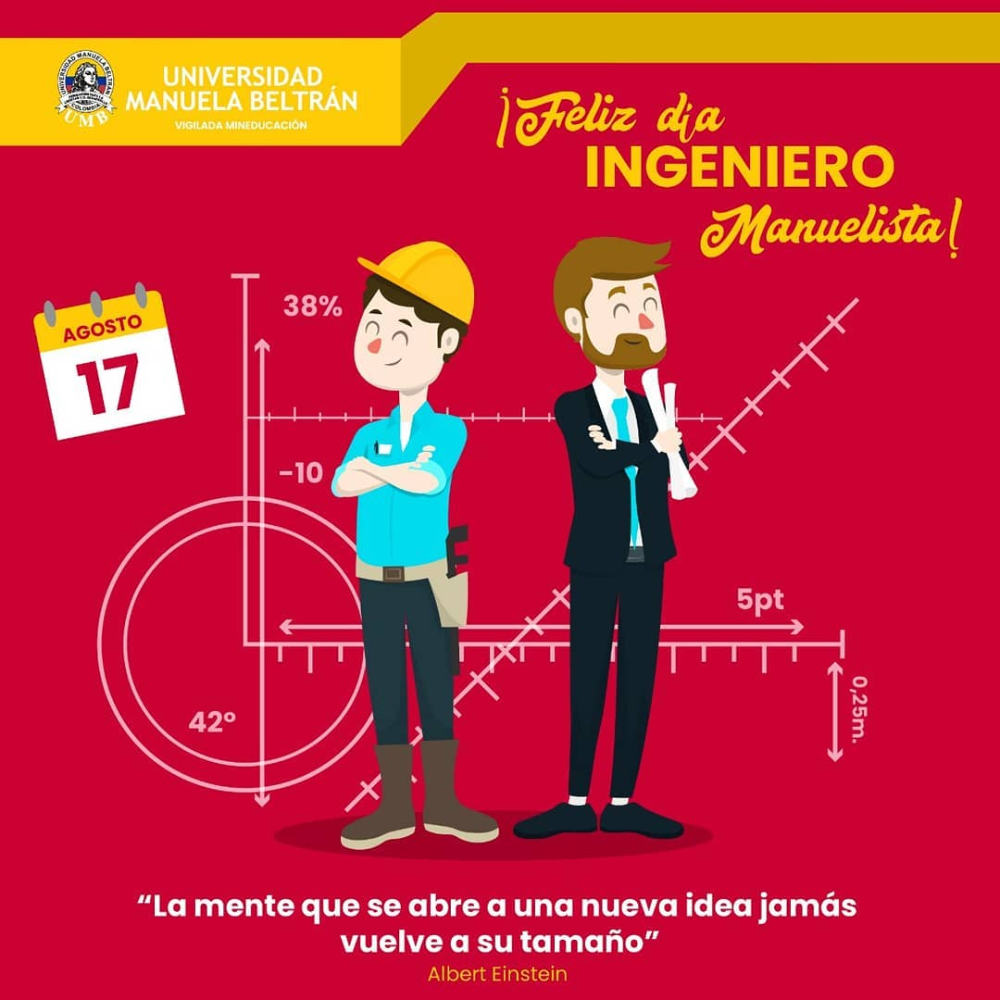

Universidad Manuela Beltran
En este proyecto, trabajando con una institución educativa que celebraba el día de cada profesión que impartían, se encontró que las piezas promocionales carecían de cohesión estetica entre sí. Por lo tanto, se decidió unificar el diseño para que resultara fácilmente reconocible al ser publicado. Se optó por utilizar ilustraciones para cada profesión, asignando a cada una una paleta de colores específica y referencias visuales a la carrera correspondiente. Esta estrategia permitió crear una identidad visual consistente y distintiva para las celebraciones de cada profesión, fortaleciendo así la conexión entre el evento y las carreras impartidas por la institución.

En eventos especiales y charlas, se adoptaba un enfoque diferente en el diseño de cada pieza, considerando el tema específico del evento y su nivel de formalidad. En estos casos, se optaba por utilizar elementos visuales como fotografías y formas que estuvieran más alineadas con la temática y el tono serio del evento. Esto aseguraba que cada pieza gráfica se adaptara de manera adecuada al contexto particular, manteniendo la coherencia con la seriedad y la relevancia del tema abordado durante las charlas y eventos especiales.
...